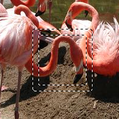
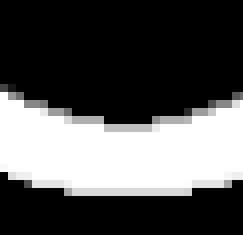
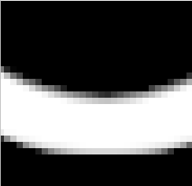
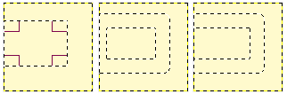

Figure 16.27. Example of creating a border from a selection

An image with a selection

After “Select Border”
The command creates a new selection along the edge of an existing selection in the current image. The edge of the current selection is used as a form and the new selection is then created around it. You enter the width of the border, in pixels or some other unit, in the dialog window. Half of the new border lies inside of the selected area and half outside of it.
You can access this command from the main menu through → .
If there is no selection, this menu entry is disabled.
Two conditions must be respected to use this command:
-
The image must have an alpha channel.
-
The original image must be created with the Antialiasing option checked in the selection tool that is used.
- Border selection by
-
Enter the width of the border selection in the box. The default units are pixels, but you can also choose the units with the drop-down menu.
- Border Style
-
-
Hard: this option does not keep anti-aliasing. This can be useful in some cases.
-
Smooth: this option keeps anti-aliasing. Note that “Smooth” does not create any anti-aliasing. That's why anti-aliasing must be added when creating the original selection. This option is the best one.
-
Feathered: this option does the same things as “Hard”, but instead of the resulting border being fully selected, it fades outwards. The result is not very good; if you want a feathered border, it's better to use one of the other modes, and then feather the result. It exists for historical reasons.
Figure 16.29. Border Style Comparison

“Hard” option. Selection editor, zoom 800%

“Smooth” option. Selection editor, zoom 800%

“Feathered” option. Selection editor, zoom 800%
-
- Selected areas continue outside the image
-
With this option enabled, an edge of an (usually rectangle) selection remains unchanged if it is aligned with an edge of the image; no new selection will be created around it.
Figure 16.30. Select border with and without “Selected areas continue outside the image”

Select border without (middle) and with (right) locked selection.

Same selections filled with red.